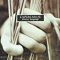

Celtic Lyrics Corner > Artists & Groups > Capercaillie > Choice Language > Who Will Raise Their Voice?
|  | Who Will Raise Their Voice? |
| Credits : | Donald Shaw |
| Appears On : | Choice Language |
| Language : | English |
Lyrics :
When the smoke clears and the truth comes shining through
I will watch the sparks fly from deadlines overdue
And make no mistake now, time will hunt them down
'Til the language of reason runs them to the ground
Chorus
:
And who will raise their voice as the cruel winds blow?
And who will call a truce? And who can break our fall?
Whisper words of reason to those without a song
And who will raise their voice and carry us along?
Those images are everywhere like sand in your hair
From the beaches of childhood that slipped through your fingers
They're like years of our lives, tormenting and cruel
Will the world look this way again, silent and true?
(Chorus)
So when the smoke clears and the truth comes shining through
Those prophecies they made will crumble in two
Like a dark horse riding, graceful through the night
You're the language of reason, you're the language of life
(Chorus)
Who will raise their voice and carry us along?